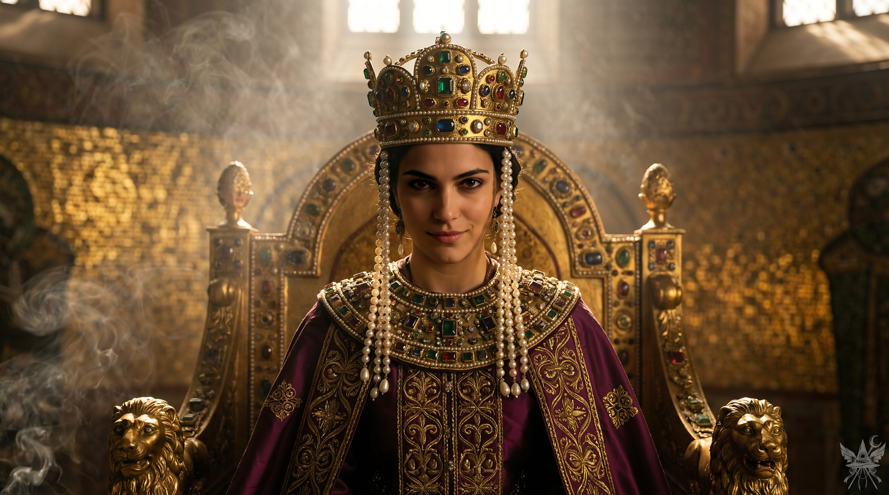
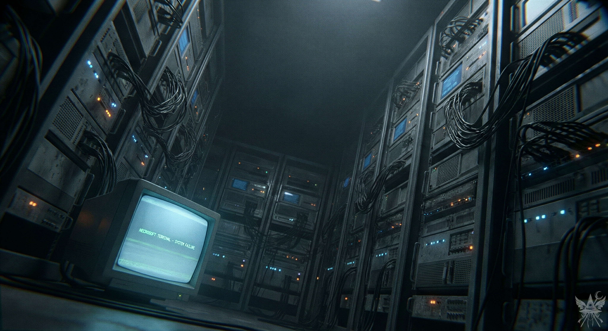
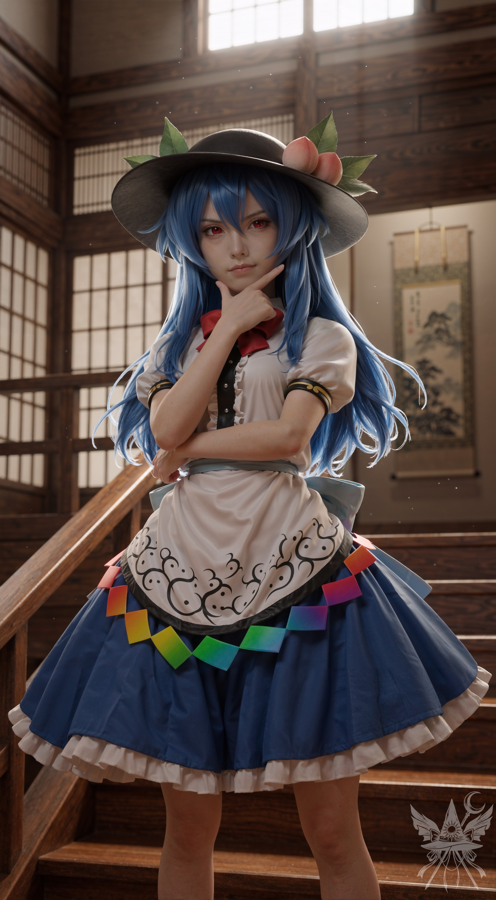
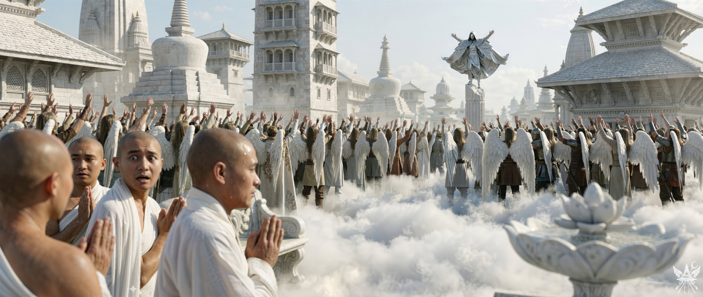

第79章 悟りへの道
比那名居家の屋敷は裕福な造りでありながら、内装は簡素で洗練されている。壁を飾るエメラルドグリーンの海を描いた水彩画や、枕元に鎮座するマラカイトの仏像が、静かな調和を生み出していた。カナが焚いた香の煙が、寝室の空気をゆっくりと侵食していく。
「わかったわ、ソクラテス。で、賢い猫さん。私たちにどんな素敵な計画を授けてくれるのかしら」
首元から胸元へと彼を移動させ、その毛並みを撫でながら皮肉げに問いかける。
生意気な毛玉は、うっとりと喉を鳴らしながら答えた。
「言ったはずだニャ。閻魔を倒し、このセクターの歴史に名を刻むと。……だが、君たちは少々衝動的すぎるニャ」
「だったら教えてちょうだい、猫様」
耳の後ろを掻いてやると、ソクラテスは尊大に鼻を鳴らした。
「嫌だニャ。見てのお楽しみだ。明日、この有頂天市で何かが起こるニャ。計画を完璧なものにするため、いくつか確認が必要だニャ」
唐突に後ろ足でこちらの肋骨を蹴りつけると、ソクラテスは身軽に跳躍し、カナの布団へと着地した。そのまま彼女の膝に陣取り、これ見よがしに頬をすり寄せる。
突然の行動に顔をしかめ、カナが声を荒らげる。
「ちょっと、やめてよ！ いい加減にして。わざと混乱させて楽しんでいるんじゃないわよ」
「嫌だニャ。まだ満足していない。もう少し付き合ってもらうニャ。……というか、よく考えてみるんだニャ。君たちの『陰謀』で、今までどれだけの人間を混乱させてきたと思っている？ 今度は、君たちが一杯食わされる番だニャ」
そう言い残すと、ソクラテスは窓枠に飛び乗り、悠然と前足を舐めてから夜の闇へと姿を消した。
残された二人は顔を見合わせ、同時に乾いた笑みをこぼした。
「あの猫、本当に底知れないわね。カナ、あいつのことどれくらい知っているの？」
「ずっとエレンの愛の魔法の実験台にされて、変な魔力を吸い込みすぎた結果、ピューマに変身できるようになったんだと思うわ」
窓辺に立ち、冷たい夜風を浴びながらカナが答える。
「でも、気になるのはそこじゃない。今までずっと傍観者を気取っていたソクラテスが、自ら行動を起こすなんて計算外だったわ。家を空けていたあの時間も、裏で何かを企んでいたのかもしれない。尾行しておくべきだったわね」

布団から抜け出し、窓辺に立つカナの隣に並ぶ。格子窓という額縁を通して見下ろす外界は、息を呑むほど広大で冷ややかな雲の海と無限の静寂に包まれていた。眼下の庭園では赤い提灯の光が幽玄な影を落とし、遠く広がる有頂天の市街は、ひっくり返した宝石箱のように無機質な瞬きを繰り返している。冷徹な星明かりが刃のような冷気を孕んで肌を刺し、観測者である己の孤独を突きつけてくる一方、背後の室内には香の甘い匂いが淀み、ぬるま湯のような安らぎが漂っていた。
カナがふと視線をこちらへ向ける。
「そういえば、アレクサンドラって名乗っていたわね。まさか、ずっと自分の先祖になりすましていたの？」
「ええ、そうとも言えるわ。普段は『アレクサンドロス』と、男性名を名乗っていたけれど」
「男装していたってこと？」
好奇心に火がついたように、カナの瞳が輝く。
「そうよ。黒マントに、つば広帽子、付け髭。たまに黒いサングラスもね」
かつての偽装を思い出し、わざと低くしゃがれた声色で真似てみせると、カナは面白がってこちらの手を握ってきた。
「へえ、悪くないわね。意外とスパイの素質があるじゃない。でも、どうして男装なんて？ もしかして、それが『本当の自分』ってやつ？」
「違うわ。私の『本質』に性別は関係ない。軽薄な男も、妖艶な女も好かないだけ。そういうくだらない枠組みを超えて、自分の中のバランスを保ちたいのよ。カナだって、どちらかと言えば中性的でしょう？」
カナは再び、冷ややかな街の灯りへと視線を戻した。
「そうね……。ずっと前から、自分が何者かわからないまま生きてきたから。一緒にいると、だんだんメデアに似てくる気がするわ」
「私に似るって、どういう意味？」
「10億人を救うためなら、100万人を平気で切り捨てるような、傲慢で冷酷な貴族」
的確すぎる表現に苦笑を禁じ得ない。
（確かに、否定はできないわね）。
「で、どうして変装が必要だったの？」
「隠密行動のためよ。両親の遺産で、祖母から相続した家に一人暮らししていると、どうしても悪目立ちする。私の専門分野は知っているでしょう？」
澱んだ教育システムの中で、無価値な情報の山から知識の欠片を拾い集めるような無駄な時間は過ごしたくなかった。だからこそ、自らの足で古代遺跡を巡り、発掘に身を投じてきたのだ。
「怪しい遺物を買い漁れば、厄介事に巻き込まれる。今は中世じゃないけれど、歪んだ正義感で『異端者』を叩き潰そうとする狂信者は、いつの時代にもいるものよ。だから一部の店や秘密結社では、アレクサンドルとして通っていたの。滅多に顔を出さない、真面目な客としてね」
話を聞き終えると、カナは楽しげに喉を鳴らした。
「なるほどね。どうして惹かれたのか、わかった気がするわ。あなたも私と同じで、ずっと偽りの自分を演じてきたのね。ねぇ、あなたが色目を使うところ、少し見てみたいかも。そんなに嫌なこと？」
「別に嫌ではないわ。色仕掛けで目的を達成することだってできる。でも問題は、そのために何を犠牲にするかということよ。
1500年ほど前、ビザンツ帝国[1]ビザンツ帝国にテオドラという女性がいたわ。競馬場の警備員だった父親のわずかな稼ぎと、熱狂した観客が落とす食べ物や小銭を拾い集めて、貧しいながらも三人の姉妹でどうにか食いつないでいたの。けれど、父親が病死すると一家は路頭に迷い、物乞いで日々を凌ぐしかなくなった。そんな中、長女が旅芸人の一座に加わり、次女のテオドラもその後を追ったのよ。
キリスト教の国において、役者という職業はひどく蔑まれていたわ。時には石を投げつけられることさえあった。それでも、娯楽に飢えた民衆はこぞって劇場へ足を運び、テオドラは舞台の上で何千人もの観客を魅了してみせた。奴隷から女王、盗賊から尼僧に至るまで、どんな役柄も自在に演じ分けたの。皮肉なことに、ひとたび舞台を降りれば、街の人々は手のひらを返したように彼女に唾を吐きかけ、冷ややかな視線を浴びせたわ。ビザンツ帝国では、そんな矛盾した扱いなど日常茶飯事だった。テオドラが蔑まれたのは、他の女優たちと同じように体を売って生計を立て、男を虜にする術を熟知していたからでもあるわね。男たちは彼女の美貌と巧みな話術に狂わされ、文字通り我を忘れたのよ。
でも、テオドラが求めていたのは、その辺のありふれた男ではなかった。裕福なパトロンたちの中から、真に心の安らぎを与えてくれる相手を探し求め、ついにヘケボロスという貴族を見つけ出したわ。ようやく安定した生活が手に入ると思ったのも束の間、皇帝ユスティニアヌスがヘケボロスをリビア属州の総督に任命してしまう。赴任先でヘケボロスはテオドラを『更生させよう』と試みたけれど、結局うまくいかずに愛想を尽かし、彼女を放り出してしまったの。こうしてテオドラは、コンスタンティノポリスにいた頃よりもさらに悲惨な状況へと転落したわ。旅費を稼ぐために体を売りながら、北アフリカやアジアの都市を転々とする日々。数年にわたる放浪の末、疲れ果てた彼女はコンスタンティノポリスへと舞い戻り、すべてに決着をつける決意を固めたの。
テオドラは教会に救いを求めたわ。もちろん、真の信仰心からではない。失った名声を取り戻すための打算よ。元女優は見事、敬虔な信者へと生まれ変わってみせた。すっかりやつれてはいたけれど、彼女の底知れない魅力は健在だった。次の標的に選んだのは、他でもない皇帝ユスティニアヌスその人。そしてテオドラは、見事にその目的を達成するの。
ユスティニアヌスの后となったテオドラ。かつて陰で彼女を泥棒猫のように蔑んでいた民衆は、今度は皇后となった彼女の前にひれ伏したわ。平民上がりだった皇帝は彼女を対等なパートナーとして扱い、皇后テオドラは国政に深く介入して数々の功績を残し、後には聖人にまで列せられることになる。……もっとも、それはまた別の話だけれど」

メデアの静かな語り声が、薄暗い和室の空気を遠い過去の帝国へと塗り替えていく。立ち昇る香の煙の向こうに、圧倒的な富と権力の重圧を放つ黄金の壁面と、深紫の衣が幻視されるようだった。神々しい逆光を背に玉座に君臨するその姿は、豪奢な宝石の冷たさを身に纏いながらも、世俗の野心と欲望を隠そうともしない、生々しく挑発的な笑みを浮かべていた。
「それで？ それが私たちに関係あるの？ 彼女は自分の望みを叶えたじゃない」
「ええ。でも、私は彼女のように一度底辺まで落ちぶれたくはないわ。できれば、最小限の犠牲で目的を達成したいのよ」
「口で言うのは簡単よね」
カナは意味ありげな笑みを浮かべると、窓辺から離れて布団へと潜り込んだ。
メデアも布団に腰を下ろし、あま子から渡された数冊の仏教書を開いた。明日の試験に向けて、八正道
（はっしょうどう）、四諦
（したい）、仏教の歴史……玉石混交の情報の中から、必要な知識だけを頭に叩き込まなければならない。
たとえば、八正道とは以下の八つの要素から成るという。
1. 正見
（しょうけん）：正しい見解
2. 正思惟
（しょうしゆい）：正しい思考
3. 正語
（しょうご）：正しい言葉遣い
4. 正業
（しょうごう）：正しい行い
5. 正命
（しょうみょう）：正しい生活の仕方
6. 正精進
（しょうしょうじん）：正しい努力
7. 正念
（しょうねん）：正しい心の持ち方
8. 正定
（しょうじょう）：正しい精神統一
四諦の方はこうだ。
1. 苦諦
（くたい）：人生は苦しみで満ちている。病気、老い、死は避けられない。
2. 集諦
（じったい）：苦しみには原因がある。それは渇愛
（かつあい）、つまり欲望である。
3. 滅諦
（めったい）：渇愛を滅すれば、苦しみも消滅する。
4. 道諦
（どうたい）：渇愛を滅する道こそが八正道である。
これを実践すれば、悟りを開き、ブッダのように輪廻転生から解脱できるらしい。
教理を読み解くにつれ、いくつかの文言が棘のように心に引っかかった。
『嘘をつかないこと。真実を語り、真実を基に行動し、信頼を得る。人を欺いてはならない』
『争いの元となる言葉を慎むこと。不和を生むような言動を慎む』
さらに『正命』の項目もまた、メデアのこれまでの歩みと決定的に相容れない。
『占いや詐欺など、不正な手段で財を成してはならない』
メデアの取ってきた行動は、これら仏教の教えと真っ向から対立している。詐称し、欺き、争いの種を蒔こうとしているのだから。それでも、自らの行いはあくまで世界を正す「崇高な目的」のためなのだと、内心で冷ややかに正当化する。
仏教書を何度も読み返すうちに、次第に文字の羅列が意味を失い、思考が麻痺し始めた。隣の布団ではすでにカナが規則正しい寝息を立てていたが、メデアは脳が完全に働きを止めるまで、無機質な暗記作業を続けた。
＊＊＊

ブーン……ブーン……。換気扇の低い唸り。広い部屋。暗い。誰もいない。床すれすれの極端な視界。壁伝いに歩く。カチッ、カチッ……。スイッチを探す。ない。シーン……。凍てつくような静寂。反対側の壁。ジジジ……。電気の音。パチパチ……蛍光灯が点滅する。パッ！ 眩しい光。冷たいシアンの光が、空間を青白く支配する。
通路の両脇、壁のようにそびえ立つ巨大な金属のキャビネット。天井まで届きそうなサーバーラック。ブーン……ブーン……。冷却ファンとハードディスクの乾燥した駆動音が響く。近づく。オレンジと白の小さな光点が、暗闇の中で無機質に明滅している。前面パネルからは、太く黒いケーブルが有機的なツタのようにあふれ出し、重力に従って無秩序に垂れ下がっている。空気中に浮かぶ微細な塵。生命の温もりは一切ない。
床に直接置かれた、旧式のモニター。緑色のモノクロームの光。画面に浮かぶ文字。
「NECROSOFT TERMINAL - SYSTEM FAILURE」。下部にノイズのような走査線が走る。マウスを掴む。カチッ……カチッ……。
画面が変わる。名前のリスト、ずらり。番号、個人番号、名前、生年月日、説明。知らない名前、次々現れる。エジプト人？ アッシリア人？ アッカド人？ 中国人？ ……109番目。
「テオドラ。ビザンツ帝国の皇后。ユスティニアヌス皇帝の妻。」
（テオドラ……？ なぜ？ ついさっき……話したばかり……）
スクロール。知らない名前。また知らない名前。最後の行、136番。個人番号――80567354689653。
「メデア・アルゲアス。召喚者。」
「カリメーラ[2]カリメーラ、メデア！」
声。振り返る。隣の壁、鏡。声はそこから。でも、鏡の中の自分、違う。豪奢な皇后のマント。高く結い上げた髪。……老けている。20歳は年上。
手を動かす。鏡の中の自分、動く……？ いや、動かない。女が、ウィンクする。
「目を覚ませ、メデア！」
＊＊＊
皇后の残響が鼓膜を打った気がした。
「目を覚ませってば！」
鋭い声に現実に引き戻される。見下ろすカナは、未だちゆりの姿を保ったままだった。窓の外には、皮肉なほど澄み切った朝の光が広がっている。
控えめなノックと共に、あま子が朝食の誘いにやってきた。両親と兄の空郎は、すでに早朝から寺院へ向かったという。ならば、幻想郷で名の知れた彼女の姉にはいつ会えるのかと内心で訝しんでいた矢先、廊下で探していた人物と遭遇した。

高い窓から差し込む朝の光が、空間に舞う微細な塵を神々しく照らし出している。逆光の中に佇むその少女――天子は、清浄な空気とは裏腹に、こちらの神経を逆撫でするような挑発的な笑みを浮かべていた。彼女の帽子から漂う瑞々しい桃の香りが、なぜか嵐の前の静けさを予感させる。腰元に視線を這わせたが、大地を揺るがすという伝説の剣の姿はない。
「あら、いらっしゃい。天国はどう？ 案外気に入ったんじゃない？」
快活な声を響かせ、天子はにやりと口角を上げた。
（ひどく馴れ馴れしい女ね……それに、この見透かしたような態度は何かしら）
カナは完璧な愛嬌を顔に貼り付け、にっこりと微笑み返す。
「ええ、とても素敵な場所ですわ」
「最初のうちだけよ。忠告しておくけれど、あんたたち、とっととここから出て行った方がいいわよ」
メデアとカナの警戒を察したのか、天子は軽く肩をすくめた。
「脅しているんじゃないわ。そのうちわかるわよ。……まあ、運が良ければね。じゃあ」
一方的に告げると、彼女はこちらの反応を待つこともなく、足早に立ち去っていった。数秒後、玄関の扉が乱暴に閉まる音が響く。
あま子が申し訳なさそうに身を縮めた。
「姉の無礼、お許しください。いつも場の空気を読めないですし、礼儀もなっていないんです……。さあ、朝食にしましょう」
（無礼というより、礼儀を知った上で意図的に破っているように見えたけれど）
食卓に並んだのは精進料理だった。野菜の汁物にご飯、桃のゼリー。どれも美味ではあるが、数日肉を口にしていないせいか、どこか腹の底が満たされない。仏教の教え通り、殺生や生き物への苦痛を徹底して避けているのだろう。
あま子はメデアたちの試験合格を祈った後、桃の品種改良について熱心に語り始めた。桃は改良が容易らしく、アーモンドと交配させることも可能だという。そうすれば、他に類を見ない風味と、わずかに毒性を帯びた種が出来上がるそうだ。
朝食を終えて礼を言い、自室に戻る。
試験の準備を始めたのはメデアだけだった。カナは天使たちの集まる場所を探し、例の新聞をばら撒く算段をつけている。
「すぐ戻るわ。一緒に試験を受けに行きましょう」
そう言い残し、窓から身軽に飛び出していった。ソクラテスも昨夜から姿を見せない。一人で教理の暗唱を続けたが、時刻が十一時四十五分を回っても、カナは一向に戻ってこなかった。痺れを切らしてあま子の部屋を訪ねると、早く寺院へ向かうよう急かされた。
天国寺院は屋敷からほど近い場所にあった。質素倹約を説く仏教の教えとは裏腹に、正面に金色の龍をあしらった巨大な仏塔が、圧倒的な権力を誇示するように聳え立っている。
入り口の小さな手水舎で、見よう見まねの作法で身を清めた。玄関で靴と靴下を脱ぎ、磨き上げられた畳の上を歩く。低い机の前に、空郎が一人で腰を下ろしていた。座布団はない。直接畳に座り、静かに足を組む。
（カナのやつ、間に合うのかしら）
面接官としての空郎は厳格な空気を纏っていたが、メデアに向ける視線には好意と、どこかいやらしいほどの慈愛が滲んでいた。媚びる必要はないと判断し、淡々と口頭試問に応じる。
試験自体は拍子抜けするほど容易だった。八正道と四諦の基本概念を説明するだけで、まるで退屈な哲学の討論だ。空郎によれば、正式な「仏」になるための試験ははるかに厳しく、仏教会への絶対的な忠誠と、肉食の禁止を含む厳格な戒律の遵守が求められるという。永遠の命だけを求める俗物をふるい落とすためのシステムらしい。
難なく合格したメデアに、空郎は満足げな微笑みを向け、僧衣と数珠、そして署名入りの通行証を差し出した。
「おめでとうございます、アレクサンドラさん。これよりあなたは正式に八正道の門をくぐりました。寺院の別館に個室を用意しておきますので、そこで瞑想と修行に励んでください。この数珠は肌身離さず持ち、諸行無常の理を常に心に留めておくように」
「空郎先生、ありがとうございます。ところで、私の弟子が少し遅れているようですが……もう少しお待ちいただけますか？ きっとすぐに来ると思います」
通行証をリュックサックにしまいながら尋ねると、彼は穏やかに首を振った。
「ちゆりさんのことですか？ 彼女なら、数分前に合格しましたよ。教理の知識は少々心もとないようでしたが、熱意は十分に伝わってきましたから」
「合格……したんですか？ それなら、今はどこに？」
「恐らく個室でしょう。案内しましょうか？」
その時、血相を変えた僧侶が慌ただしく駆け込んできた。息を切らしながら空郎にすがりつく。
「空郎先生！ 大変です！ 広場で騒ぎが起きています！」
空郎はメデアに鋭い視線を送ると、軽く会釈を残して僧侶の後を追った。メデアも急いでその後を追う。
広場はすでに、異様な熱気と割れんばかりの歓声に包み込まれていた。

鼓膜を揺らす怒号と羽ばたきの音。視界を埋め尽くすのは、狂騒の渦にある有翼の天使たちと、暴力的なまでの純白の光だ。すぐ傍らでは、事態の異常性に息を呑み、恐怖に震える僧侶たちの青ざめた顔がある。
群衆の中心、折れた石柱の上に立つその人物は、神話から抜け出した英雄のように絶対的な威圧感を放っていた。仮面で顔を隠し、背には金属的で幾何学的な構造を持つ銀白色の翼を広げている。声は甲高く、性別すら定かではないが、威厳に満ちた男性的なトーンで群衆を支配するカリスマ性は本物だった。
「我々は仏どもを寛容に迎え入れたはずだ！ それにもかかわらず、やつらは恩を仇で返すというのか！」
演説者の力強い声が、天使たちの怒りに火を点ける。
「我々の土地を買い占め、仕事を奪い、信仰にまで口出しする！ 天使の翼をもぎ取ろうというのか？ 断じて許さん！ 天使の民よ、誇り高き民よ、共に立ち上がれ！」
天使たちが、熱狂的な雄叫びで応える。
「なぜ、やつらの横暴を許すのだ？ なぜ、仏どもに我々の聖なる信仰を汚させるのだ？ 龍神様の石像が壊されたのも、きっとやつらの仕業だ！ 閻魔にまで賄賂を贈りやがって！ 神に選ばれし天使たちに、仏どもの汚らわしいカルシャパナ[3]カルシャパナを握らせるというのか！ 忌まわしい銅貨め！」
――忌まわしい！――
狂信的な同調が、白亜の街に轟く。
「何世紀にもわたる搾取を終わらせる時が来た！ 我らが誇り高き民よ、本来あるべき自由と尊厳を取り戻すのだ！」
――取り戻すのだ！！――
「天界は天使のものだ！」
――天使のものだ！！――
群衆の熱狂が頂点に達した瞬間、上空の空気が凍りついた。大天使ミカエルが、圧倒的な冷気を伴って舞い降りたのだ。
「違法集会を中止せよ！ 全員解散！」
「裏切り者！」
と叫ぶ天使たちが一斉に弾幕を放つが、大天使には届きすらしない。ミカエルが無造作に巨大な剣を振り下ろすと、演説者が足場にしていた石柱が両断され、轟音を立てて崩れ落ちた。
演説者は群衆の頭上へと跳躍し、空中で身を翻す。
「戦いは終わっていない！ まだ始まったばかりだ！」
そのまま天高く舞い上がり、瞬く間に白い空の彼方へと消え去った。
残されたミカエルが冷徹な視線で群衆を家路へと促すと、狂騒は嘘のように引き、広場には静寂が戻った。破壊された痕跡の前で、数人の仏が立ち尽くし祈りを捧げている。その中には、あま子と空郎の姿もあった。
（一体何が起きているの？ あの扇動者は誰？ カナの仕業？ それとも、他に黒幕がいるというの？）
無数の推測が頭の中で交錯する。だが、この暴動は確実にメデアの背中を押した。変身能力が回復するまで、あと三時間。この盤面をどう動かすか、極めて慎重に思考を巡らせなければならない。
（もしあの演説者がカナなら話は早いけれど、そうでないのなら……どう動くべきか。天使の姿に化けて信頼を得て、あの演説者の背後を探る？ 閻魔との戦争を煽り立ててから協力を持ちかける？ あるいは、強行突破して永江衣玖や龍神に直談判し、閻魔の陰謀だと吹き込んで内戦を止めさせる？ 仏たちを利用して天使への憎悪を煽るのも手だけど、あれを閻魔に向けさせるのは骨が折れそうね）
無限に分岐する選択肢を前に、メデアは静かに冷たい空気を吸い込んだ。
（東ローマ帝国）：かつて地中海世界に栄え、現在のギリシャを含む広大な地域を支配していた帝国。現代ギリシャの文化や歴史に大きな影響を与えている。
（ギリシャ語）：おはよう
（サンスクリット語：kārṣāpaṇa）： 仏教興隆期の古代インドで流通した貨幣。主に銀貨で、商人などが発行していた。